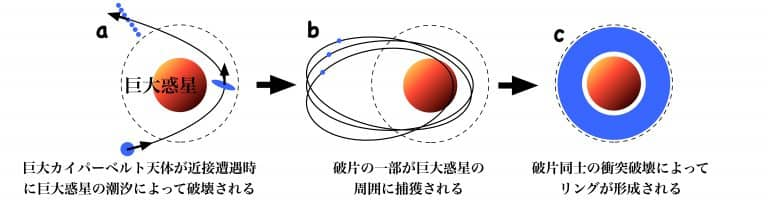

(2024/03/13)
土星の概要
太陽系第六惑星です。巨大な環で有名です。
直径が12万500kmです。65個の衛星を持っています。
自転周期は10時間40分で公転周期は29.5年です。
木星と同じガス惑星です。
土星の構造
基本構造
中心から岩石の内、液体の金属水素、気体と液体の水素、気体の水素とヘリウムの大気で構成されたガス惑星です。
木星と同じで着陸不可能です。
土星の環
土星と言ったらまず巨大な環を思い浮かべると思います。
現在の環の概要
土星の輪はほとんどが氷でできているため、太陽光を反射して土星本体と同じ程度の明るさで観測できます。
早いところでは時速8万kmで木星の周りを周回しています。
土星の輪はメインリングは赤道から7000kmから8万kmに広がっています。しかし、環の厚さは10mから1km程度です。
土星の輪はA~Eリングまであります。A~Cリングをまとめてメインリングと呼びます。
この記事の上にある写真に映っているリングがメインリングです。
環の成り立ち
土星の輪はまず太陽系外縁天体の一つが木星に近づくことで、強い重力により破壊されます。
その破片が土星の周りを周回するようになったことで、環ができるようになった。と考えられています。
(※強い重力がかかると重力源に近い側と遠い側で引力に差が生まれるので、引き延ばされます。
この時の力を潮汐力と言います。
これがさらに強くなるとスパゲッティ現象と呼ばれます。)

間欠泉が起こる衛星
土星の惑星にエンケラドスというものがあります。
土星から24万kmのところを周回しています。直径は約500kmです。
エンケラドスでは何と間欠泉が起こります。
間欠泉とは
左の写真のように一定周期で水蒸気や熱湯を噴出する現象のことです。
間欠泉の影響
エンケラドスの間欠泉は地球よりも高度が大きいです。
地球で間欠泉は数メートルから数十メートルです。
しかし、エンケラドスの場合数十キロから百キロメートルまで水蒸気が吹き出ます。
このことからエンケラドスの内部に安定した熱源が存在することが伺えます。
ということは内部に液体の水が存在する可能性が高いです。
さらに昨年(2023年)エンケラドスの間欠泉から高濃度のリン酸が含まれていることを発見しました。
リン酸は生物のDNA等を作る重要な元素です。
これらのことからエンケラドスでは生命が存在する環境が整っていると考えられています。
エンケラドスの熱源
ではエンケラドスはどのようにして熱源を得ているのでしょうか
木星の衛星であるイオのように土星の重力による潮汐力で内部が過熱されている説や、
内部に地殻活動がある説が挙げられます。
宇宙豆知識(土星の環にある隙間はなぜ生まれたのか)
土星の輪は隙間を境目にしてAリング、Bリング……と分類しています。なぜこの様な隙間が発生したのでしょうか。
AリングとBリングの間に大きな隙間があります。これをカッシーニの間隙(かんげき)と呼びます。
土星には多くの衛星がいます。つまり、多くの重力源があるということです。
重力同士で共鳴することで、特定の領域に存在する小惑星が弾き飛ばされます。
それによってこの様な隙間が生じるのです。
これと似たような理由で、火星と木星の重力の影響でその間に小惑星が多くなっています。